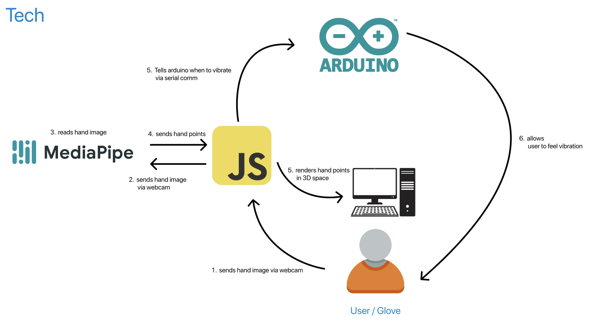
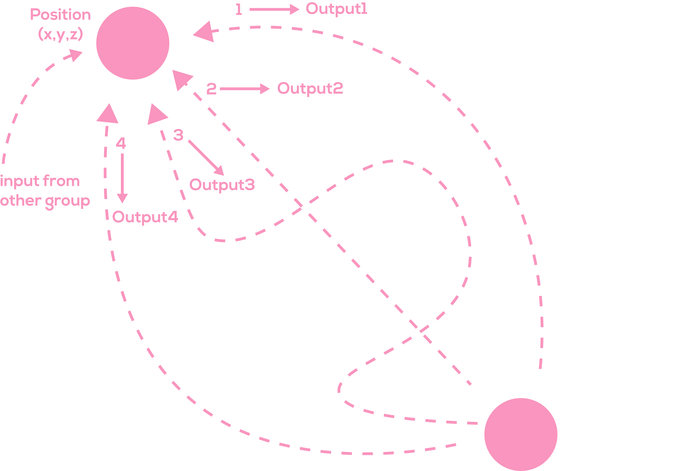
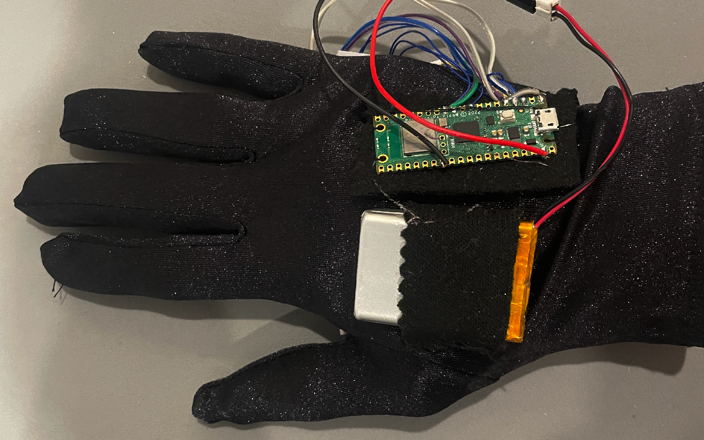
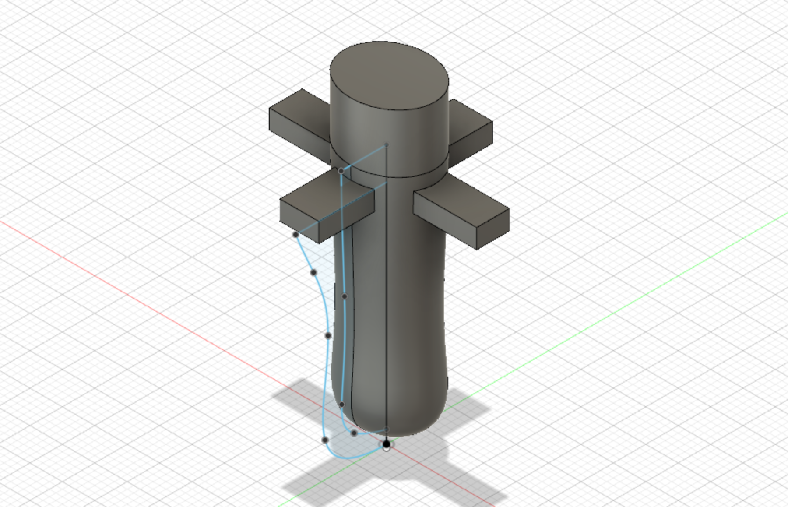
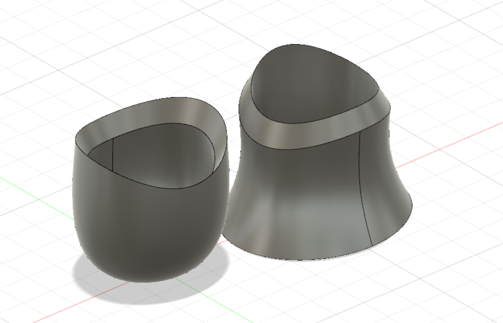
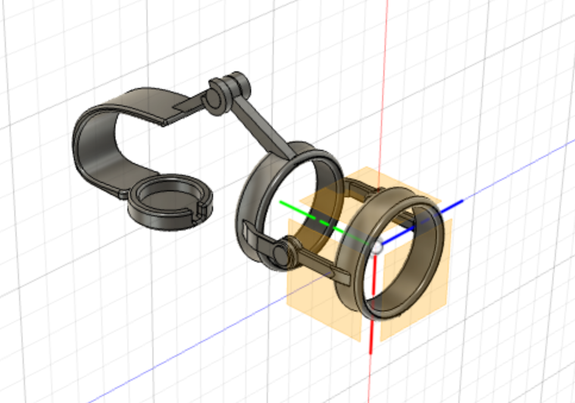
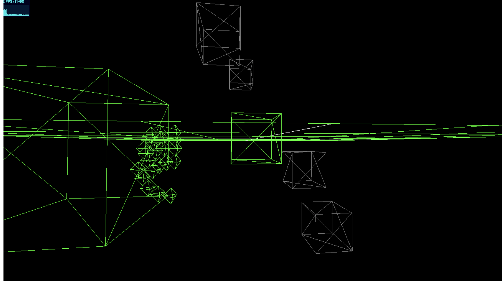
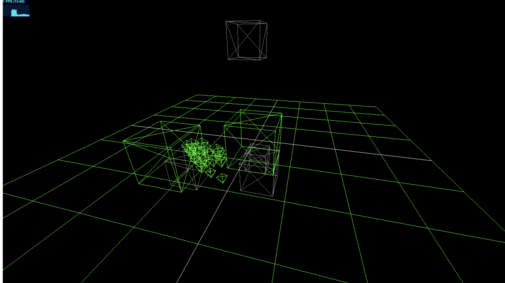
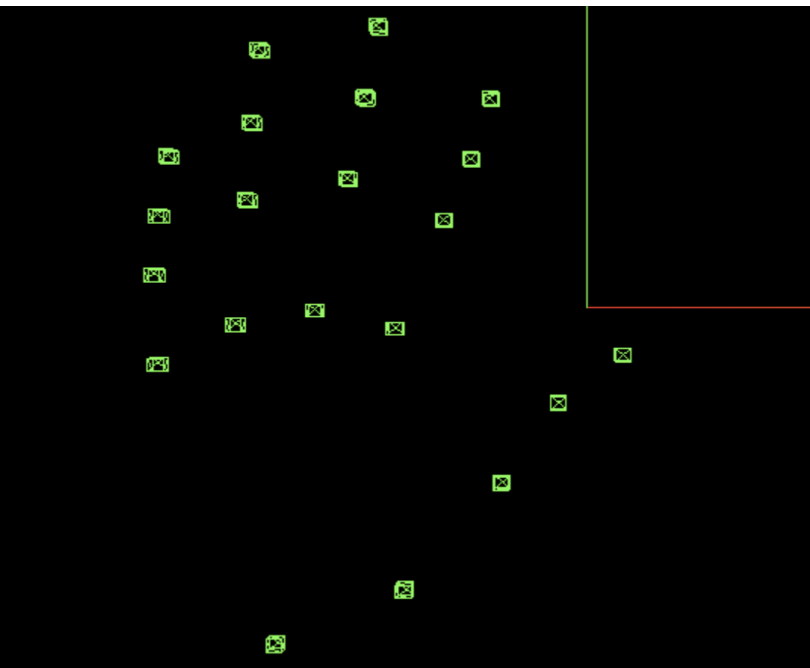

Tangible Colors , Photo documentation, Zelong Li, Preston Bourne, Yuanning Han, 2023
Statement
The objective of this project is to investigate a novel approach to interacting with computers,
circumventing conventional input devices in favor of three-dimensional input as the primary means of
interaction with the digital realm. The customary controllers currently in use rely on one or two-dimensional input data,
which provide limited scope for interaction. However, by employing three-dimensional input, the amount of
data generated increases significantly, thereby expanding the possibilities for interaction and enabling novel forms of
engagement.
The proposed approach involves tracking the virtual position of the user's hand through a webcam, a readily available solution.
Additionally, a specially designed glove with haptic feedback facilitates users' interaction with digital content on a physical level,
bridging the gap between the digital and physical worlds. The haptic feedback is based on the contact of the object and the color of the contact.
Different colors have distinct vibration patterns based on the color frequency. This integration of digital and physical realms has the potential
to revolutionize the way we interact with computers, providing a more immersive and intuitive experience for users.
Tools
Unity, JavaScript, Node.js, Three.js, MaxMsp, MediaPipe, ERMs, Raspberry Pi, Battery, Glove
Technical Review
Current flowChart


Hapric feedback glove
The glove communicates with the computer using UDP protocal wirelessly.

Next generation mold design



The upcoming iteration of the project will utilize Three.js instead of Unity.
This change is expected to make the project more accessible and less hardware demanding,
as Three.js is a web-based framework that can be run on various devices and platforms without requiring high-end hardware.


